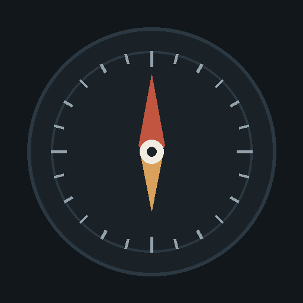
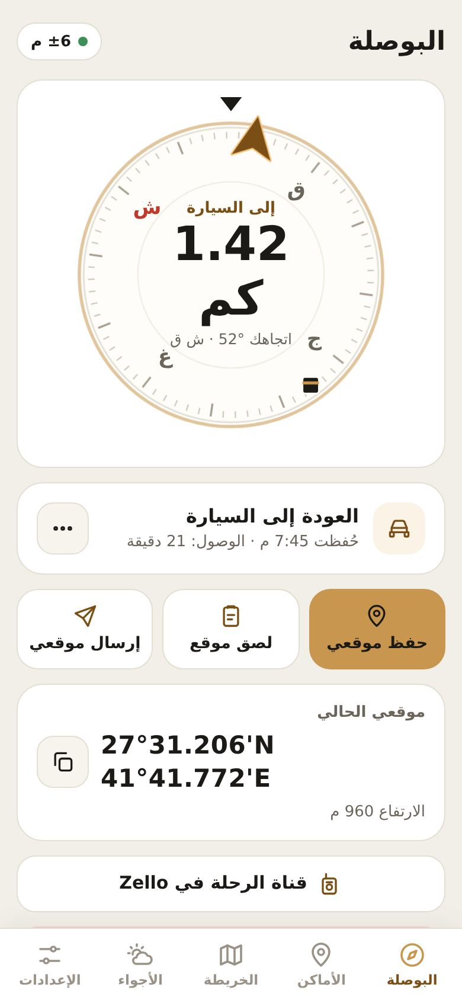
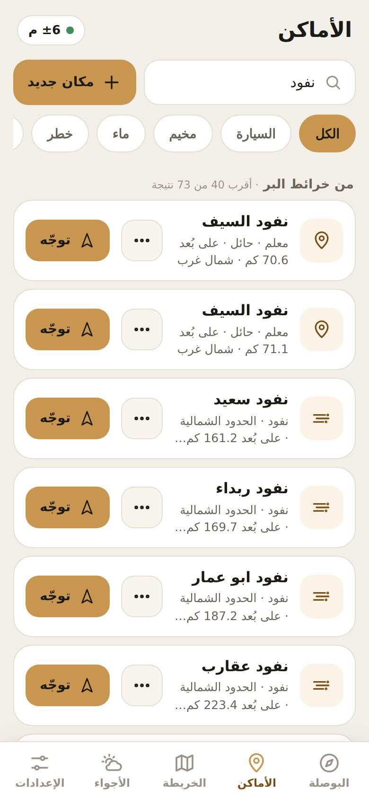
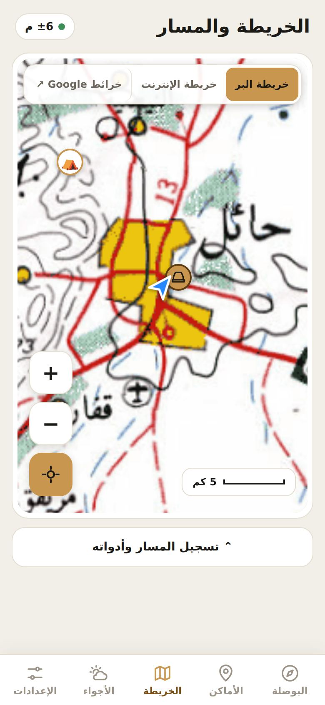

دليل — بوصلة البر
ترجع لسيارتك، وتعرف وين السيل الآن، بدون إنترنت.
مجاني
بدون تسجيل
يعمل بلا شبكة
ثبّته على جوالك في 10 ثوانٍ
- افتح هذه الصفحة في Safari.
- اضغط زر المشاركة أسفل الشاشة.
- اختر إضافة إلى الشاشة الرئيسية ثم إضافة.
- افتح دليل من أيقونته الجديدة، واسمح بالموقع والبوصلة.
أنت تفتح الصفحة من داخل تطبيق آخر (واتساب أو غيره). اضغط ⋯ أو مشاركة ثم «فتح في Safari»، أو انسخ الرابط والصقه في Safari.
- افتح هذه الصفحة في Chrome.
- اضغط القائمة ⋮ أعلى الشاشة.
- اختر تثبيت التطبيق أو إضافة إلى الشاشة الرئيسية.
- افتح دليل من أيقونته، واسمح بالموقع.
لماذا التثبيت؟ يفتح أسرع، ويعمل بلا إنترنت، وتصلك تنبيهات السيول والأمطار.
ماذا يقدّم لك دليل؟
ارجع لسيارتك مهما ابتعدت
احفظ موقع السيارة بضغطة، والبوصلة تدلّك عليها بالمسافة والاتجاه ووقت الوصول. أثناء القيادة تتبع اتجاه السيارة بدقة GPS.

السيل الآن… بعيون أهل البر
صور حيّة للأمطار والسيول والربيع من المشتركين، مع المسافة منك وزر «توجّه». وتنبيه على جوالك عند سيول منطقتك.
أكثر من 32 ألف موقع بري
نفود وأودية وآبار ومعالم في 13 منطقة. ابحث بالاسم وتوجّه إليها مباشرة — حتى بدون شبكة.

خريطة البر ومسار رحلتك
خريطة برية تعمل بلا إنترنت، تدور مع اتجاهك، وتسجّل مسارك لتعود عليه أو تشاركه.

وأيضًا
- الصق موقعًا من واتساب أو خرائط قوقل وتوجّه إليه فورًا.
- اتجاه القبلة دائمًا في البوصلة.
- طقس موقعك: الرياح والغبار والأمطار للساعات والأيام القادمة.
- زر طوارئ يرسل موقعك، وقناة Zello للرحلة.
- خصوصيتك محفوظة: أماكنك ومساراتك وموقع سيارتك على جوالك فقط. لا حساب ولا رقم جوال.
شاركه مع ربعك
أرسله في واتساب
امسح الرمز بكاميرا الجوال لفتح دليل.
تحميل ملصق دليل للطباعة أو المشاركة
{kind=link}